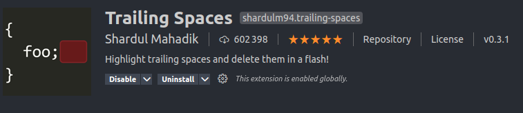
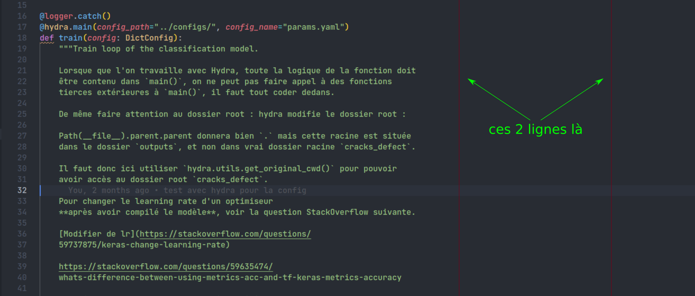

Configuration de VSCode
On parlera ici de la configuration de vscode, c'est l'un des IDE standards et il offre beaucoup de possibilités :
- l'intégration de nombreux plugins,
- la possibilité d'avoir un IDE lors d'une connexion ssh,
- la possibilité de travailler directement dans un environnement de dev Docker depuis vscode...
D'autres IDE existent et sont très bien : Atom, PyCharm, Sublime text, le choix de l'IDE pourrait ne pas être fixé.
Question
Doit on fixer le choix de l'IDE, afin d'avoir le même pour tout le monde ? Même si je pense que tout le monde utilise déjà vscode.
La configuration de vscode se fait généralement de façon globale, toutefois pour que les configurations soient liées aux projets et non à l'utilisateur, il est important que les configurations puissent voyager avec gitlab, donc locale.
Info
Chaque projet vscode peut avoir une configuration locale en fournissant un fichier settings.json et en le situant à la racine du projet dans le dossier caché .vscode.
Ce projet peut ainsi voyager avec gitlab et petmettre d'avoir toujours la même configuration peut importe le pc depuis lequel le pull est fait.
Comme dit précédemment, le fichier de configuration locale est un json, détaillons.
Configuration générale
Note
La deuxième n'est vraiment utile que si vous utilisez zsh comme shell avec Oh My Zsh et Powerlevel10k et voulait activer Powerlevel10k dans le terminal intégré de vscode.
"One Dark Pro" est un thème sombre dérivé du thème de base de l'IDE Atom, et "trailing-spaces.trimOnSave": true est une option du plugins "Trailing Spaces" permettant de supprimer tous les espaces superflux à chaque sauvegarde.

Configuration avec Python
Pour un projet python, il y a deux endroits que l'on doit configurer :
- Le fichier
settings.json. - Le fichier
setup.cfg, situé à la racine du dossier.
Le fichier settings.json permet de configurer vscode pour lui dire quel formateur, linter, quelle librairie de tests choisir pour vérifier la qualité du code, le fichier setup.cfg lui fixera les paramètres des ces derniers.
Note
D'autres fichiers de configurations des librairies python, comme le fichier pyproject.toml défini dans PEP518, qui est offciellement le fichier de configuration préféré par le formateur black, et aussi le fichier de configuration préféré pour le manager de dépendances et de projet poetry. Sauf que
- les développeurs de
flake8ont décidés qu'ils ne supporteraient pas le formatpyproject.toml, - les développeurs de
mypyy réfléchissent...depuis 2018...
Les librairies isort, pytest et coverage sont compatibles avec pyproject.toml, mais dans tous les cas on devrait garder un fichier setup.cfg pour flake8 et tous ses plugins. black n'ayant que peu de choix dans ses configurations, autant tout mettre dans un fichier setup.cfg.
Dans ce fichier de configuration, on utilise donc :
- black pour le formatage du code.
- isort pour les triage des imports.
- flake8 pour le linting.
- mypy pour le type hinting.
- pytest pour l'ensemble des tests unitaires, d'intégrations, etc.
Note
Ca parait évident, mais même si ces modules sont sélectionnés dans vscode, rien ne marchera s'ils ne sont pas installés dans votre environnement virtuel, environnement docker ou autre.
On reviendra plus en détails sur chacun plus tard, expliquons ce fichier de config.
black
La première partie active black comme formateur du code.
- On fixe la longueur maximale du code (ie pas de la documentation en docstrings) à 88 caractères avec
python.formatting.blackArgs, qui est la longueur maximale acceptée par black par défaut. - On fixe le formatage du code en automatique à chaque sauvegarde, on désactive le formatage lors d'une copie ou lorsque l'on tape.
- Afin d'avoir un repère visuel pour la longueur du code, on crée une règle verticale à 88 caractères et une a 120 caractères via
"editor.rulers". La longueur de 120 caractères est un choix personnel pour la longueur maximale des commentaires (de moins en moins utilisé). On choisit la couleur de ces règles verticales via"editorRuler.foreground", ici rouge.

pylance
Pylance est un plugin de Microsoft permettant permettant un support amélioré du plugin python.
isort
isort est un module permettant de trier par ordre alphabétique et de façon automatique dans un ordre d'importance précis. Par défaut, l'ordre d'importance est le suivant.
- FUTURE,
from __future__ import ... - STDLIB, les librairies standards fournies par python de base, par exemple
pathlib - THIRDPARTY, la plupart des autres librairies, numpy, pandas, etc (celles qui ont besoin d'un
pip install ...ouconda install ...). - FIRSTPARTY, les modules provenant du projet python actuel.
- LOCALFOLDER, les imports locaux, généralement des imports avec des chemins relatifs.
python.sortImports.args permet de dire où se trouve le "setup path" (-sp), l'autre action permet d'automatiser le tri à chaque sauvegarde, similaire doc à celle pour black.
flake8
flake8 est un linter, il permet de vérifier que la code suit bien certaines règles de syntaxes. Pour citer wikipédia au lieu de le paraphraser :
Quote
lint, or a linter, is a static code analysis tool used to flag programming errors, bugs, stylistic errors, and suspicious constructs. The term originates from a Unix utility that examined C language source code.
black formate le code selon certaines règles qui lui sont propres, par exemple les strings sont toutes définies entre doubles apostrophes ", l'anglais utilisant déjà les apostrophes simples ' pour le possessif ou pour les abbréviations, cela évite les problèmes de conflits.
flake8 peut être configuré pour s'adapter aux règles de black, et prendre en charge d'autres plugins, comme wemake-python-styleguide qui permet par exemple aussi de vérifier la compléxité des fonctions.
D'autres linter sont disponibles dans vscode, comme pylint, "python.linting.pylintEnabled": false le désactive, les lignes de configs suivantes désactivent flake8 pour certains répertoires.
mypy
mypy permet de faire du 'type hinting", en d'autres termes il permet de définir le type de variables que l'on aura en entrée d'une fonction, et en déduira si cette fonction est cohérente.
Voici un exemple classique de fonction.
Maintenant avec du type hinting, mais une erreur.
mypy retournera une erreur, en disant que cette somme est incohérente.
Cette fonction là sera validée.
mypy est une aide supplémentaire pour la compréhension des fonctions, mais aussi pour la rédaction des docstrings car ces décorations seront directement récupérées par mkdocstrings et le plugin Python Docstring Generator de vscode.
mypy étant compatible avec flake8, "python.linting.mypyEnabled": true active cette compatibilité en permettant de recevoir les messages de mypy via des messages flake8 dans vscode.
pytest
Librairie pour les tests python.